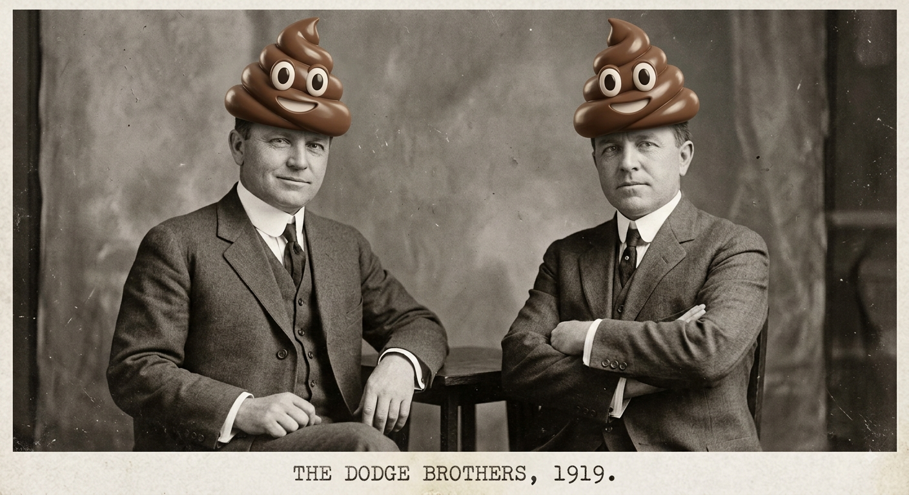

Captains Log :
2026/08/13
Social Contract - Breaking Down
I was reading a story recently and came across a theory about the current state of American Society. There used to be a cultural understanding that citizens of the United States used to follow. Basically, we may not always get along, and we may argue, but ultimately we are all brothers and sisters and do what is right for society as a whole. Regardless of your political leanings or thoughts on this, I think this is something we all want to agree upon. It has also played a large part in what makes up the American identity.
That social contract though, has been breaking down, and I think we can all agree upon that statement. In my opinion it all started with changes in corporate responsibility and that started a long time ago with the Dodge brothers. In 1919 the Ford Motor Company was wildly successful. Ford didn't invent the concept of the assembly line, but he damn near perfected it. The company was publicly traded, as all companies in this country of a certain size, ambition, or greed, seem to be. When it was doing so well Henry Ford, who was not a perfect man by any means, wanted to invest the profits of the company into his customers. He saw that sales were lower, not bad, not slumping, not indicitive of any long term problems, but lower. He thought if corporations, like Ford, invested in it's people more people would be able to afford more of my products. His plan was to invest in his employees.
The Dodge brothers, who were engineers at the Ford Motor Company at the time, owned Ford stock. They sued Ford saying that their primary goal and responsibility was to the shareholder. They won.
I realize that was 100 years ago, but it set the precedence. Employees, americans, wright and wrong; these were all secondary to profit. Even with that companies invested in their employees, but who knows what that could have looked like without the interference of the Dodge brothers. It used to be that even working at a grocery store could provide for a family in a way that allowed them to buy a house and take vacations.
I'm sure everyone has heard about how bad inflation is, and that is true, but beyond the cost of groceries, or housing, or college, is the whole look at everything. If you compare housing prices today to 1971 a person would have to make $58,000 to $61,000 today to have a comparable amount of buying power. Keep in mind this is the nation as a whole, there are places where it's cheaper, and definitely places where this would not be possible. However, when you add everything together, beyond individual aspects to live a similar lifestyle, and hope to some day retire at the level of comfort someone making minimum wage would have in 1971, today you would need a salary of over 100k.
In 1981 Ronald Reagan addressed the nation and spoke for the first publicly documented speaking of "Trickle Down Economics". In my opinion the only trickle down we have seen from this is in the erosion of America's social contract. When corporations were no longer socially expectant to take care of their employees, make a solid product, or generally not be shitty, the American people responded. If you want to get by in life, you have to look out for yourself, because no one else is going to. This has created a "Me" economy and society that lacks empathy, investment, and community.
I may not know a lot, but I do know...
FUCK THE DODGE BROTHERS

Source -
https://theinfohatch.com/1971-minimum-wage-compared-to-today/#google_vignette